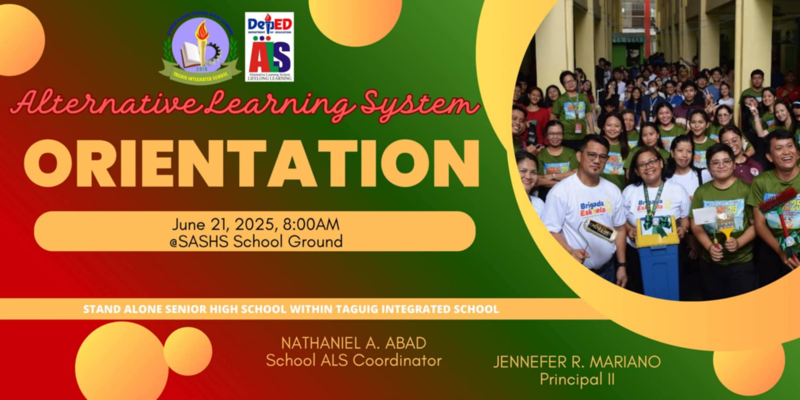
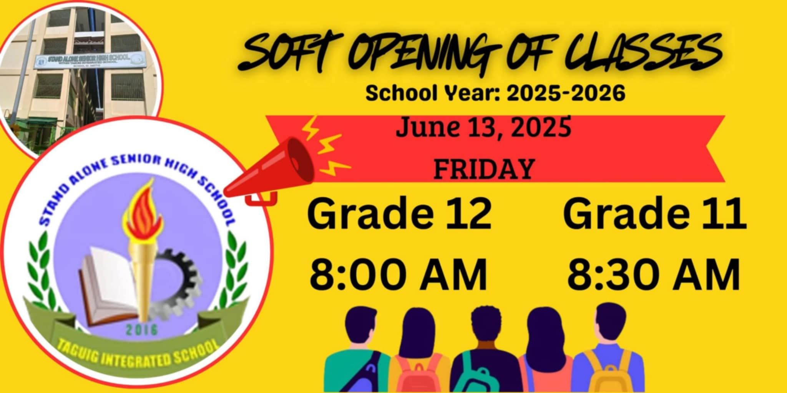
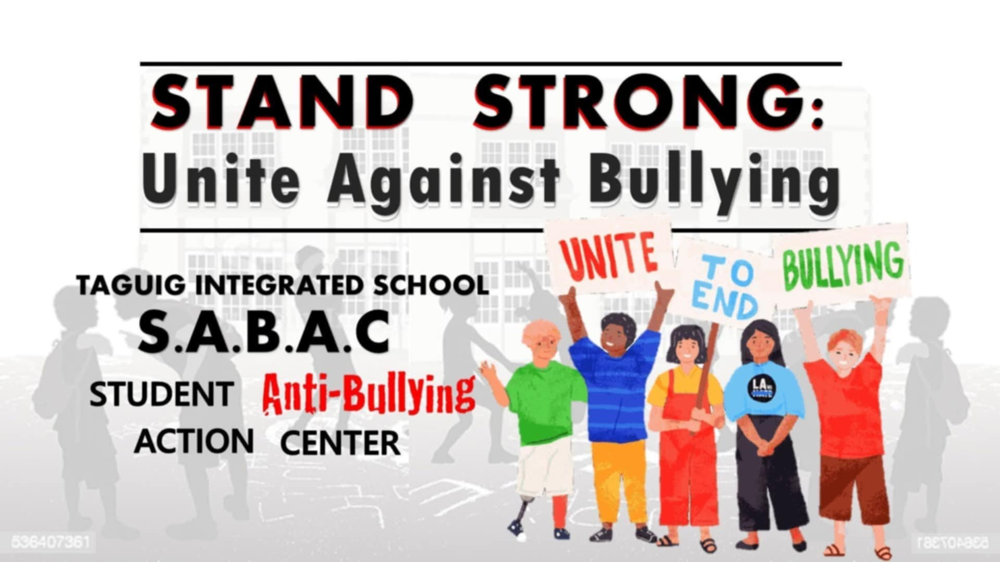

|  |  | |
| A flag ceremony is a formal event where the national flag is raised or lowered, usually with the national anthem and announcements. It promotes patriotism and unity in schools like TIS-SHS. | Orientation introduces rules, programs, and services to students and parents. It ensures everyone understands the school's expectations and policies. | The soft opening celebrates the school's initial launch. It allows testing of facilities and services before full operations. |
|  | ||
| Brigada Eskwela prepares public schools for class opening. At TIS-SHS, it helps clean and maintain classrooms and school grounds. | The Youth Formation Division develops students into confident and socially-aware individuals who can impact their communities. | S.A.B.A.C stands for Student Anti-Bullying Action Center, a student group or organization that fights bullying in the school. |